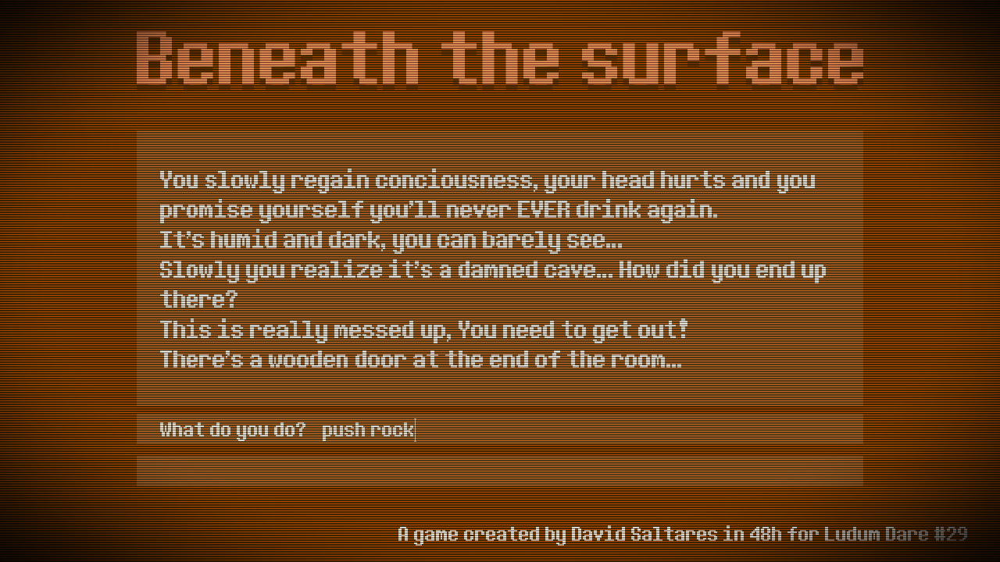

You’ll have to excuse some Homefront: The Revolution spam in the blog these days. E3 2014 is on and, for the very first time, they’re showing gameplay of the game I worked on at Crytek UK for two years. Exciting!
Without further ado, I’ll let you see how awesome it looks.
At last! The game I worked on during my 2 years at Crytek UK has been announced with an amazing trailer. Big congratulations at the Nottingham team for the huge effort put into this project. What a bunch of incredibly talented people, I’m really honoured to have been part of the project.
I mainly worked on emergent AI systems for NPCs and animation. Unfortunately, you cannot see much of that on this trailer. Let’s wait and see for E3!
As I mentioned here a few days ago, last weekend I entered the 29th edition of the Ludum Dare game jam, which had Beneath the surface as a theme. To be completely honest, I was only bothered to work on the project for about 4 hours each day. That probably explains why is my worst game jam entry so far.
Beneath the surface is a very simple, classic text adventure where the player needs to escape an underground cave by using commands in the form of verb object like:
Open door

The game is too basic and needed more user testing before the deadline. I was quite unhappy with it but then thought I’d rather submit it than dropping out completely. But hey, at least I managed to work on shaders a little bit, an area I really need to get better at.
Maybe next time I’ll manage to pull off something better.
I’m up for Ludum Dare despite not being too sure about whether or not I’ll be able to invest enough time on it. The last couple of editions eluded me, so I didn’t want to miss yet another one.
Given the time constraints, I might even go for just a text adventure. Or maybe not, who knows. I’ll decide in the morning, once the theme is announced!
Tools of the trade.
Language: Java with Eclipse
Libraries: Libgdx (what a surprise) with no previous codebase. I might use additional libraries if needed, though.
Important: variadic templates are only available from C++11, make sure your compiler supports it.
Who has never used the Observer pattern? As long as you have been involved in any medium sized project, chances are you have come across it at some point.
The problem
It is extremely common to have an event generating system other components would like to subscribe to. However, oftentimes I see code to manage a collection of listeners being unnecessarily duplicated on a per system basis. That is registration, un-registration and notification. A lot of nonsensical boilerplate, which makes for code that is harder to read and easier to get wrong.
Let’s take a look at a typical input event dispatching system, simplified for the purposes of this article. We could have an IInputListener interface that handles a couple of events, keyDown() and keyUp().
Our InputSystem class could hold an std::set of IInputListener pointers. Registration and un-registration is made possible through addListener() and removeListener() respectively. Bad news is that, every single time we want to send an event to the listeners, we are forced to iterate over the collection. Also, God kills a kitten.
class InputSystem
{
public:
void addListener(IInputListener* listener)
{
m_listeners.insert(listener);
}
void removeListener(IInputListener* listener)
{
m_listeners.erase(listener);
}
void update()
{
// Touch down detected
for (auto listener : m_listeners)
{
listener->keyDown(code);
}
...
// Touch up detected
for (auto listener : m_listeners)
{
listener->keyUp(code);
}
}
private:
std::set<IInputListener*> m_listeners;
};
As if this wasn’t enough, there is another important gotcha here. What happens when a listener un-registers as a result of an event? The m_listeners collection is modified in the middle of the for loop, thus current iterators are no longer valid. The second we try to increment the internal iterator to fetch the next listener.
BAM!
Not good.
The solution is simple but annoying. We can just add new listener registration and un-registration requests to a pending list while in the middle of a dispatch. Those pending lists would be processed once it’s safe to modify the collection of listeners.
Moreover, some people use std::vector instead of std::set for performance reasons, which is completely legit. However, that involves adding code to ensure listener uniqueness in the collection.
Every time.
Honestly? I’m lazy so I don’t want to be the guy who implements this over and over.
Okay, so what do you suggest?
The way towards the solution
Following our intuition, we realise that a way to generalise this behaviour is in order. Ideally, it would meet the following criteria.
Avoids all code duplication.
Ensures listener uniqueness.
It is safe, can register, un-register while notifying.
Avoids manually going through the listener collection to send an event.
Compatible with any kind of event listener.
Intuitively, we could have a ListenerSet<Type> template class that handles listener duplication as well as registration and un-registration safety.
Note: we’ll be using std::set rather than std::vector for simplicity. Both can be used as long as the appropriate precautions are taken.
ListenerSet::notify() would iterate over all the registered listeners calling IInputListener::keyDown and passing keyCode as a parameter.
Maybe easier said than done?
True, ListenerSet::notify() needs to support an arbitrary number of arguments, as different event handlers won’t necessarily have the same signature. Moreover, IInputListener::keyDown(and every other potential handler) needs to receive a this pointer along the remaining arguments.
This is where variadic templates come into play. Basically, they’re templates that can take an arbitrary number of parameters of any type.
Interestingly enough, std::bind() also takes an arbitrary number of parameters. That means we can create an std::function> object that has everything we need: the event handler function pointer, this and the remaining arguments.
Templates are instantiated at compile time, which means the compiler will complain if we’re doing something dodgy such as trying to bind the wrong thing. Compile time checks are good.
Managing a set of listeners and sending events is now a lot easier, safer and readable. Last but not least, it’s significantly less error prone.
Hooray!!!
Full source
For those interested, I’ve made the code available as a GitHub Gist.